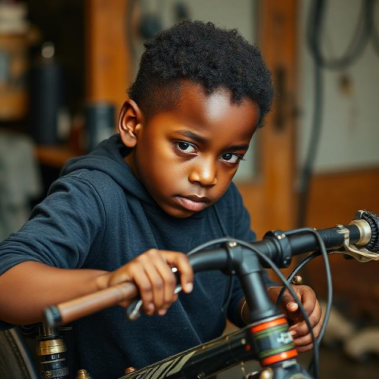
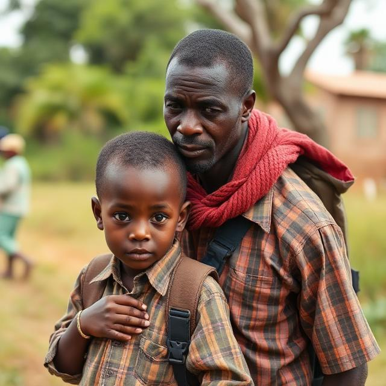
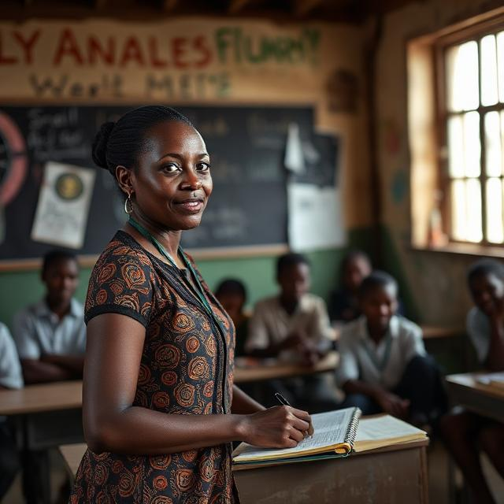
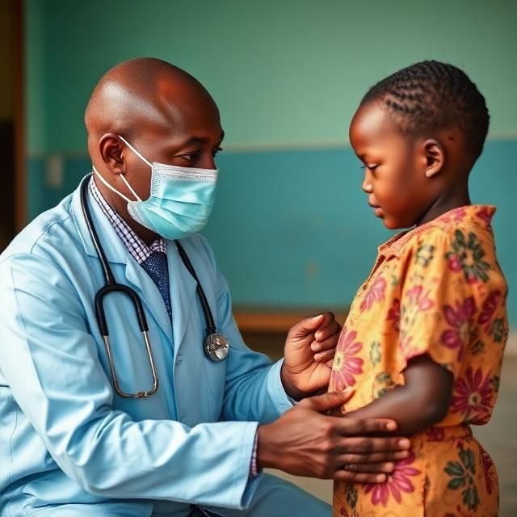

Nous observons des images et nous en faisons un récit oral
🖼️ Nous observons des images
Ces quatre situations retracent le parcours de vie du jeune médecin représenté dans la quatrième image.




S'adressant à un groupe d'enfants orphelins pris en charge par son association, ce jeune médecin part de l'exemple de sa propre réussite pour les inciter à travailler davantage et à faire preuve de courage et de persévérance.
Faites-le parler en insistant sur :
- Les difficultés qu'il a rencontrées quand il était enfant (Image 1) ;
- La rencontre avec la personne qui l'a aidé (Image 2) ;
- Les études qu'il a faites (Image 3) ;
- Sa réussite dans la vie (Image 4) ;
- Son engagement actuel dans la protection des enfants en difficulté.
✍️ Exercices
📌 1. Les difficultés que j’ai rencontrées quand j’étais enfant
Complétez le paragraphe avec les mots de la liste.
Liste : mécanicien – école – retard – pauvreté – courage – motivé – financer – progressivement
📌 2. La rencontre avec la personne qui m’a aidé
Pour chaque numéro, choisissez la bonne réponse parmi les trois propositions.
📌 3. Les études que j’ai faites
Reconstituez le paragraphe en remettant ces phrases dans le bon ordre.
📌 4. Ma réussite dans la vie
Associez chaque début de phrase à sa fin.
📌 5. Mon engagement actuel dans la protection des enfants en difficulté
Écrivez la question qui correspond à chaque réponse, en utilisant la première personne comme dans le discours du médecin.
🎧 Texte final : le parcours du jeune médecin
À l’époque, quand j’étais un petit garçon en Afrique, je travaillais comme mécanicien de vélos dans la rue pour aider ma famille. Je ne pouvais pas aller à l’école tous les jours, et j’avais un grand retard scolaire. Malgré la pauvreté qui nous frappait durement, je n’ai jamais perdu le courage de continuer à apprendre. Chaque soir, je rêvais d’un avenir meilleur. Mais il fallait aussi que je finance moi-même mes petites dépenses, ce qui rendait tout plus difficile. Progressivement, j’ai compris que sans instruction, je ne pourrais pas sortir de cette situation. Pourtant, je restais motivé et je faisais preuve d’une grande persévérance.
À ce moment-là, mon père, malgré sa pauvreté, a décidé de me conduire à l’école. Il était très généreux envers moi et voulait m’offrir un avenir meilleur. Il m’a soutenu moralement et m’a encouragé à travailler dur. Grâce à lui, j’ai pu rattraper mon retard scolaire. Il a même financé mes frais de scolarité en faisant de petits travaux. C’est lui qui m’a pris en charge et qui a apporté de l’aide précieuse à notre famille.
À l’école, une enseignante dévouée nous encadrait avec patience et essayait de nous rendre heureux malgré la pauvreté. En même temps, une association caritative m’a accordé une bourse d’études et m’a apporté un soutien scolaire régulier. Grâce à ce soutien, j’ai rattrapé mon retard scolaire et j’ai commencé à aimer l’école. J’étais très motivé et je travaillais chaque jour avec sérieux et détermination. Petit à petit, j’ai réalisé des progrès spectaculaires dans toutes les matières. Progressivement, j’ai retrouvé confiance en moi et j’ai su que je voulais devenir médecin.
Aujourd’hui, je suis médecin et je dispense des soins gratuits aux enfants malades. J’ai réalisé des progrès spectaculaires qui m’ont permis de réussir brillamment mes études. Ma réussite montre que le travail et la persévérance paient toujours. Désormais, je peux aider les enfants en difficulté comme moi autrefois. Je n’oublie jamais que j’étais un enfant pauvre qui rêvait d’un avenir meilleur.
Désormais, j’ai créé une association caritative pour aider les enfants en difficulté. Mon association parraine des enfants orphelins et les encadre au quotidien. Je dispense des soins gratuits dans les quartiers pauvres. Je soutiens moralement et financièrement les familles qui en ont besoin. J’accorde des bourses d’études aux enfants méritants.
📚 Ressources linguistiques
- 🔹 Association caritative – Prendre en charge – Encadrer – Soutenir moralement et financièrement – Apporter de l'aide à ... – Accorder une bourse d'études – Apporter un soutien scolaire – Parrainer des enfants – Financer des frais de scolarité – Dispenser des soins gratuits
- 🔹 Rattraper son retard scolaire – Être motivé – Réaliser des progrès spectaculaires
- 🔹 À l'époque – À ce moment-là – En même temps – Dès lors – Aujourd'hui – Désormais
- 🔹 Progressivement – Petit à petit